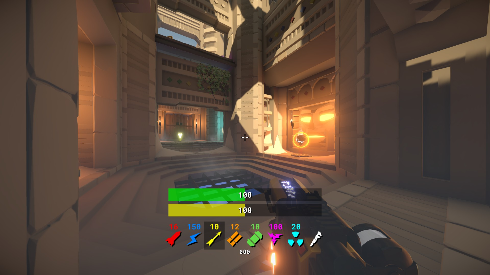

Lua projects
Lua is another scripting language I don't normally touch. However, sometimes there is no other choice of language to use. That being said, it's quite a nice language to write scripts in.
vmHud
vmHud is an experimental HUD for the arena FPS title Reflex Arena
Development began while I was customising my own HUD setup, eventually looking into the files of other custom HUDs and the original game HUD.
Reflex uses the NanoVG library to draw it's HUD, and it allows for user created HUDs as a result. Once I found this out, I sought to create my own HUD for fun!
vmHud is only a prototype, but it currently has the following features:
- Timing indicator for doublejump boosts.
- Health and armour bars with dynamic colours.
- Weapon and ammo hotbar.
- Movespeed indicator.
 See the hud in action: timer, health/armour and weapons/ammo.